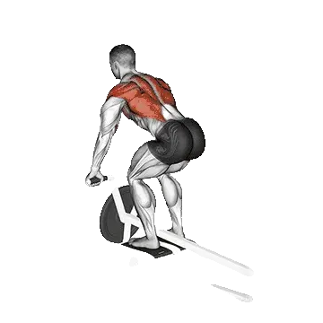

Remo con barra T
Remo con barra T permite consultar el peso medio y los estándares de fuerza como referencia dentro de espalda. Los músculos principales son Dorsal ancho, Trapecio.

Peso medio: Intermedio
Referencia para una persona de nivel intermedio.
Peso medio de Remo con barra T [1RM]
| Nivel | ||
|---|---|---|
| Principiante | 37 kg | 16 kg |
| Novato | 59 kg | 30 kg |
| Intermedio | 89 kg | 47 kg |
| Avanzado | 124 kg | 70 kg |
| Élite | 164 kg | 95 kg |
Nota: estos estándares son estimaciones de 1RM basadas en levantadores promedio. Pueden variar según el peso corporal, la edad y otros factores personales. Consulta los datos detallados en la tabla inferior.
Tu nivel actual
Calcula el 1RM estimado y nivel de Remo con barra T
Calcula el 1RM estimado con el peso y las repeticiones reales y compáralo con el estándar por peso corporal.
Es una estimación. La técnica, el rango de movimiento y la fatiga pueden cambiar el resultado. Ver el método
Estándares de fuerza de Remo con barra T (kg)
Hombres por peso corporal (kg) [1RM]
| Peso corporal | Principiante | Novato | Intermedio | Avanzado | Élite |
|---|---|---|---|---|---|
| 50 | 17 | 32 | 52 | 77 | 106 |
| 55 | 21 | 37 | 59 | 85 | 115 |
| 60 | 25 | 42 | 65 | 93 | 124 |
| 65 | 29 | 47 | 71 | 101 | 133 |
| 70 | 33 | 52 | 77 | 108 | 141 |
| 75 | 37 | 57 | 83 | 115 | 149 |
| 80 | 40 | 62 | 89 | 121 | 156 |
| 85 | 44 | 66 | 94 | 127 | 164 |
| 90 | 48 | 71 | 100 | 134 | 171 |
| 95 | 51 | 75 | 105 | 140 | 177 |
| 100 | 55 | 79 | 110 | 145 | 184 |
| 105 | 58 | 83 | 115 | 151 | 190 |
| 110 | 62 | 88 | 120 | 156 | 196 |
| 115 | 65 | 92 | 124 | 162 | 202 |
| 120 | 68 | 95 | 129 | 167 | 208 |
| 125 | 72 | 99 | 133 | 172 | 214 |
| 130 | 75 | 103 | 137 | 177 | 219 |
| 135 | 78 | 107 | 142 | 182 | 224 |
| 140 | 81 | 110 | 146 | 186 | 229 |
Hombres por edad [1RM]
| Edad | Principiante | Novato | Intermedio | Avanzado | Élite |
|---|---|---|---|---|---|
| 15 | 31 | 50 | 76 | 106 | 139 |
| 20 | 36 | 58 | 86 | 121 | 160 |
| 25 | 37 | 59 | 89 | 124 | 164 |
| 30 | 37 | 59 | 89 | 124 | 164 |
| 35 | 37 | 59 | 89 | 124 | 164 |
| 40 | 37 | 59 | 89 | 124 | 164 |
| 45 | 35 | 56 | 84 | 118 | 155 |
| 50 | 33 | 53 | 79 | 111 | 146 |
| 55 | 30 | 49 | 73 | 102 | 135 |
| 60 | 27 | 44 | 67 | 93 | 123 |
| 65 | 25 | 40 | 60 | 84 | 111 |
| 70 | 22 | 36 | 54 | 76 | 100 |
| 75 | 20 | 32 | 48 | 68 | 89 |
| 80 | 18 | 29 | 43 | 61 | 80 |
| 85 | 16 | 26 | 39 | 54 | 72 |
| 90 | 14 | 23 | 35 | 49 | 64 |
Mujeres por peso corporal (kg) [1RM]
| Peso corporal | Principiante | Novato | Intermedio | Avanzado | Élite |
|---|---|---|---|---|---|
| 40 | 10 | 20 | 35 | 54 | 76 |
| 45 | 11 | 22 | 38 | 57 | 80 |
| 50 | 13 | 25 | 41 | 61 | 83 |
| 55 | 14 | 26 | 43 | 64 | 87 |
| 60 | 16 | 28 | 45 | 66 | 90 |
| 65 | 17 | 30 | 47 | 69 | 93 |
| 70 | 18 | 32 | 50 | 71 | 96 |
| 75 | 19 | 33 | 51 | 74 | 99 |
| 80 | 21 | 35 | 53 | 76 | 101 |
| 85 | 22 | 36 | 55 | 78 | 104 |
| 90 | 23 | 37 | 57 | 80 | 106 |
| 95 | 24 | 39 | 58 | 82 | 108 |
| 100 | 25 | 40 | 60 | 84 | 111 |
| 105 | 26 | 41 | 62 | 86 | 113 |
| 110 | 27 | 43 | 63 | 88 | 115 |
| 115 | 28 | 44 | 64 | 89 | 117 |
| 120 | 29 | 45 | 66 | 91 | 118 |
Mujeres por edad [1RM]
| Edad | Principiante | Novato | Intermedio | Avanzado | Élite |
|---|---|---|---|---|---|
| 15 | 14 | 25 | 40 | 59 | 81 |
| 20 | 16 | 29 | 46 | 68 | 92 |
| 25 | 16 | 30 | 47 | 70 | 95 |
| 30 | 16 | 30 | 47 | 70 | 95 |
| 35 | 16 | 30 | 47 | 70 | 95 |
| 40 | 16 | 30 | 47 | 70 | 95 |
| 45 | 16 | 28 | 45 | 66 | 90 |
| 50 | 15 | 26 | 42 | 62 | 84 |
| 55 | 13 | 24 | 39 | 57 | 78 |
| 60 | 12 | 22 | 36 | 52 | 71 |
| 65 | 11 | 20 | 32 | 47 | 64 |
| 70 | 10 | 18 | 29 | 42 | 58 |
| 75 | 9 | 16 | 26 | 38 | 52 |
| 80 | 8 | 14 | 23 | 34 | 46 |
| 85 | 7 | 13 | 21 | 30 | 41 |
| 90 | 6 | 12 | 19 | 27 | 37 |
Nota: una barra estándar de gimnasio suele pesar 20 kg.
Músculos trabajados
| Grupo | Músculos |
|---|---|
| Músculos principales | Dorsal ancho, Trapecio |
| Músculos secundarios | Bíceps braquial, Deltoides |
| Estabilizadores | Oblicuo externo, Erectores espinales |
| Agarre | Extensores del antebrazo |
Registra y analiza en la app Shiba
Consulta pesos, repeticiones y progreso en un solo lugar.
Cómo leer la tabla
| Nivel | Descripción | Distribución |
|---|---|---|
| Principiante | Domina la técnica correcta y entrena de forma constante durante al menos 1 mes. | Parte inferior 5% |
| Novato | Entrena de forma constante durante al menos 6 meses. | Top 80% |
| Intermedio | Entrena de forma constante durante al menos 2 años. | Top 50% |
| Avanzado | Entrena de forma constante durante más de 5 años. | Top 20% |
| Élite | Entrena este ejercicio de forma especializada durante más de 5 años. | Top 5% |